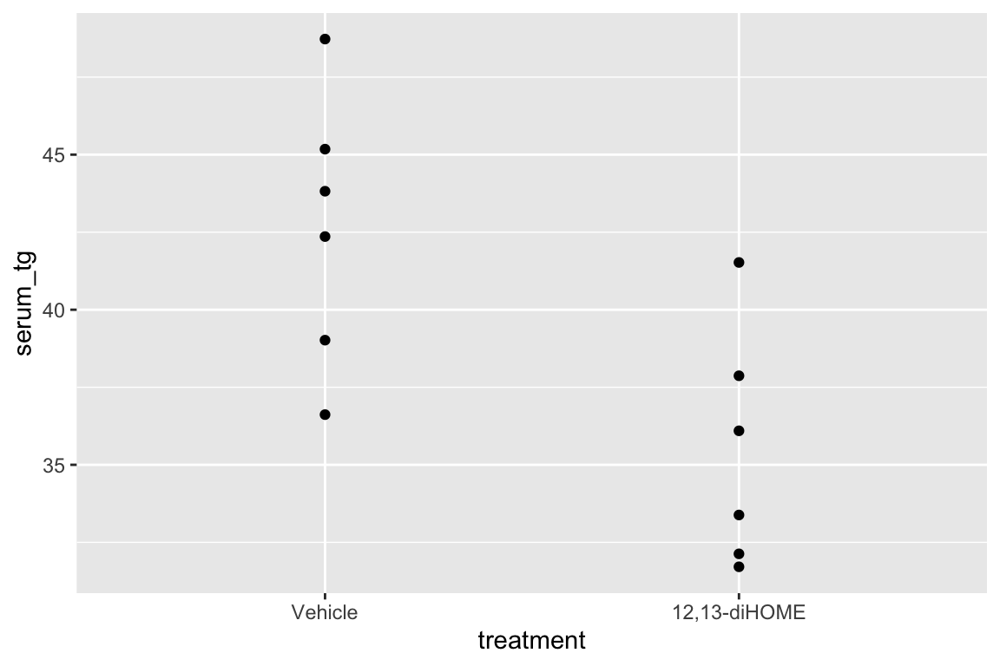
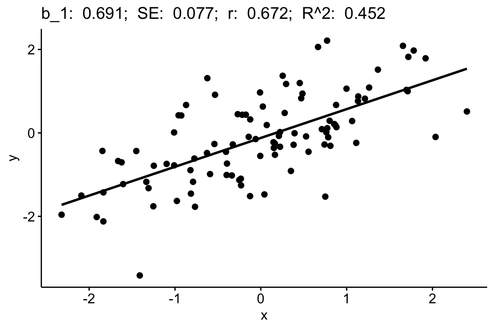
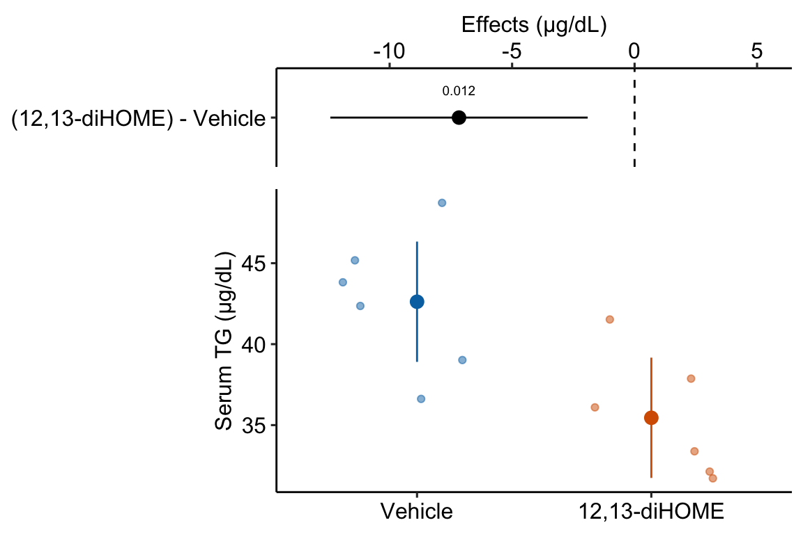
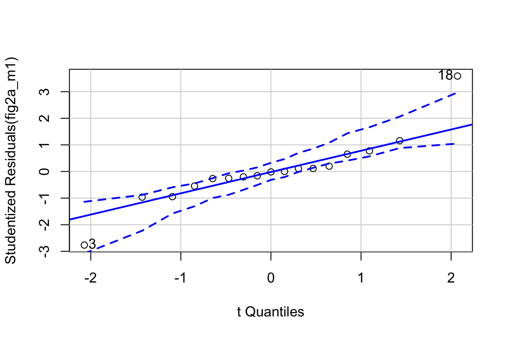
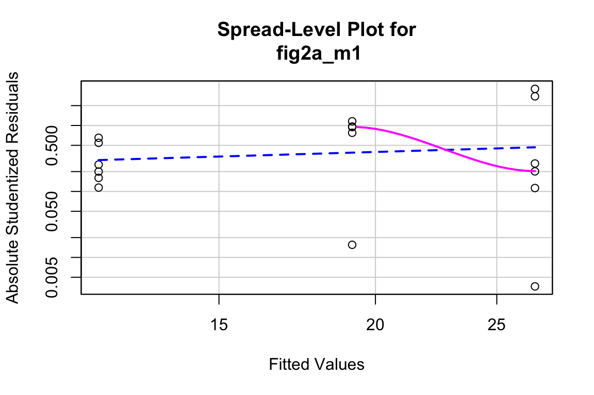
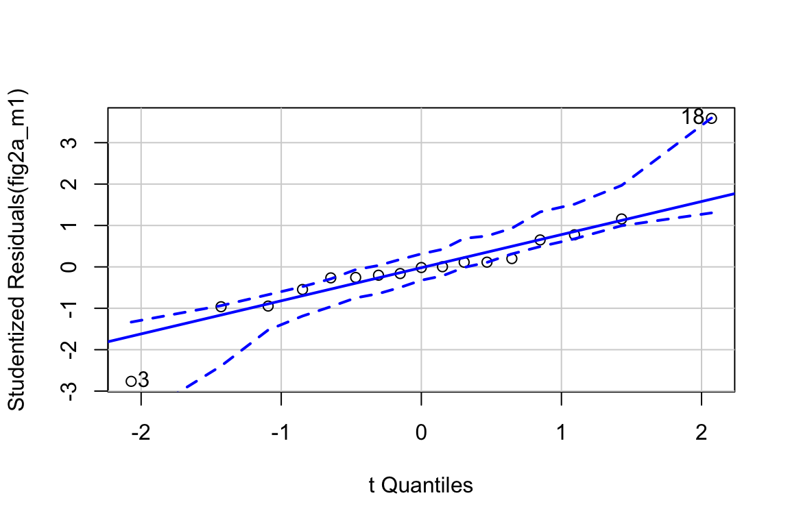

Chapter 10 Linear models with a single, categorical X
10.1 A linear model with a single, categorical X variable estimates the effects of the levels of X on the response.
To introduce a linear model with a single, categorical \(X\) variable, I’ll use data from a set of experiments designed to measure the effect of the lipid 12,13-diHOME on brown adipose tissue (BAT) thermoregulation and the mechanism of this effect.
Download the source data files and move to a new folder named “The cold-induced lipokine 12,13-diHOME promotes fatty acid transport into brown adipose tissue”.
Cold temperature and the neurotransmitter/hormone norepinephrine are known to stimulate increased thermogenesis in BAT cells. In this project, the researchers probed the question “what is the pathway that mediates the effect of cold-exposure on BAT thermogenesis?”. In the “discovery” component of this project, the researchers measured plasma levels of 88 lipids with known signaling properties in humans exposed to one hour of both normal (20 °C) and cold temperature (14 °C) temperature. Of the 88 lipids, 12,13-diHOME had the largest response to the cold treatment. The researchers followed this up with experiments on mice.
10.1.1 Example 1 – two treatment levels (“groups”)
Let’s start with the experiment in Figure 3d, which was designed to measure the effect of 12,13-diHOME on plasma triglyceride level. If 12,13-diHOME stimulates BAT activity, then levels in the 12,13-diHOME mice should be less than levels in the control mice.
10.1.1.1 Step 1 – Understand the experiment design
response variable: \(\texttt{serum_tg}\), a continuous variable.
treatment variable: \(\texttt{treatment}\), with levels: “Vehicle”, “12,13-diHOME” (the control or “Vehicle” mice were injected with saline). Coded as a factor.
design: single, categorical X
10.1.1.2 Step 2 – import
Open the data and, if necessary, wrangle into an analyzable format. The script to import these data is in the section Hidden code below.
10.1.1.3 Step 3 – inspect the data
The second step is to examine the data to
- get a sense of sample size and balance
- check for biologically implausible outliers that suggest measurement failure, or transcription error (from a notebook, not in a cell)
- assess outliers for outlier strategy or robust analysis
- assess reasonable distributions and models for analysis.

There are no obviously implausible data points. A normal distribution is a good, reasonable start. This can be checked more thoroughly after fitting the model.
10.1.1.5 Step 5 – check the model

The Q-Q plot indicates the distribution of residuals is well within that expected for a normal sample and there is no cause for concern with inference.

##
## Suggested power transformation: 0.8167264The spread-location plot shows no conspicuous trend in how the spread changes with the conditonal mean. There is no cause for concern with inference.
10.1.1.6 Step 6 – inference
10.1.1.6.1 coefficient table
fig3d_m1_coef <- cbind(coef(summary(fig3d_m1)),
confint(fig3d_m1))
kable(fig3d_m1_coef, digits = c(1,2,1,4,1,1)) %>%
kable_styling()| Estimate | Std. Error | t value | Pr(>|t|) | 2.5 % | 97.5 % | |
|---|---|---|---|---|---|---|
| (Intercept) | 42.6 | 1.67 | 25.6 | 0.0000 | 38.9 | 46.3 |
| treatment12,13-diHOME | -7.2 | 2.36 | -3.0 | 0.0125 | -12.4 | -1.9 |
10.1.1.6.2 emmeans table
fig3d_m1_emm <- emmeans(fig3d_m1, specs = "treatment")
kable(fig3d_m1_emm, digits = c(1,1,2,0,1,1)) %>%
kable_styling()| treatment | emmean | SE | df | lower.CL | upper.CL |
|---|---|---|---|---|---|
| Vehicle | 42.6 | 1.67 | 10 | 38.9 | 46.3 |
| 12,13-diHOME | 35.5 | 1.67 | 10 | 31.7 | 39.2 |
10.1.1.6.3 contrasts table
fig3d_m1_pairs <- contrast(fig3d_m1_emm,
method = "revpairwise") %>%
summary(infer = TRUE)
kable(fig3d_m1_pairs, digits = c(1,1,1,0,1,1,2,4)) %>%
kable_styling()| contrast | estimate | SE | df | lower.CL | upper.CL | t.ratio | p.value |
|---|---|---|---|---|---|---|---|
| (12,13-diHOME) - Vehicle | -7.2 | 2.4 | 10 | -12.4 | -1.9 | -3.04 | 0.0125 |
10.1.1.7 Step 6 – plot the model
ggplot_the_model(
fig3d_m1,
fig3d_m1_emm,
fig3d_m1_pairs,
legend_position = "none",
y_label = "Serum TG (µg/dL)",
effect_label = "Effects (µg/dL)",
palette = pal_okabe_ito_blue,
rel_heights = c(0.5,1)
)
10.1.1.8 Step 7 – report the model results
- Different ways of reporting the results without making claims that are not evidenced by the statistical analysis
“The estimated average effect of 12,13-diHOME on serum TG is 7.17 µg/dL (95% CI: -12.4, -1.9, \(p = 0.012\)).”
“Mean serum TG in mice with 12,13-diHOME (35.5 µg/dL, 95% CI: 31.7, 39.2) was 7.17 µg/dL less (95% CI: -12.4, -1.9, p = 0.012) than mean serum TG in control mice (42.6 µg/dL, 95% CI: 38.9, 46.3).”
- Problematic reports
“12,13-diHOME significantly reduced serum TG (\(p = 0.012\))” (1. In English, the current use of “significant” means “large” or “important”. Only knowledge of the physiological consequences of TG reduction over the range of the CI can be use as evidence of importance. 2. The statistics do not provide evidence that it is the serum TG that caused this reduction. While 7.17 µg/dL is the difference, some or all of the effect could be due to, in general, sampling, execution errors such as non-random treatment assignment, clustered caging, clustered application of assays, or non-blinded measurement of the response.
10.1.2 Understanding the analysis with two treatment levels
The variable \(\texttt{treatment}\) in the Figure 3d mouse experiment, is a single, categorical \(X\) variable. In a linear model, categorical variables are called factors. \(\texttt{treatment}\) can take two different values, “Vehicle” and “12,13-diHOME”. The different values in a factor are the factor levels (or just “levels”). “Levels” is a strange usage of this word; a less formal name for levels is “groups”. In a Nominal categorical factor, the levels have no units and are unordered, even if the variable is based on a numeric measurement. For example, I might design an experiment in which mice are randomly assigned to one of three treatments: one hour at 14 °C, one hour at 18 °C, or one hour at 26 °C. If I model this treatment as a nominal categorical factor, then I simply have three levels. While I would certainly choose to arrange these levels in a meaningful way in a plot, for the analysis itself, these levels have no units and there is no order. Ordinal categorical factors have levels that are ordered but there is no information on relative distance. The treatment at 18 °C is not more similar to 14 °C than to 26 °C. Nominal categorical factors is the default in R and how all factors are analyzed in this text.
10.1.2.1 Linear models are regression models
The linear model fit to the serum TG data is
\[\begin{align} serum\_tg &= treatment + \varepsilon\\ \varepsilon &\sim N(0, \sigma^2) \tag{10.1} \end{align}\]
This notation is potentially confusing because the variable \(\texttt{treatment}\) is a factor containing the words “Vehicle” and “12,13-diHOME” and not numbers. The linear model in (10.1) can be specified using notation for a regression model using
\[\begin{align} serum\_tg &= \beta_0 + \beta_1 treatment_{12,13-diHOME} + \varepsilon\\ \varepsilon &\sim N(0, \sigma^2) \tag{10.2} \end{align}\]
Model (10.2) is a regression model where \(treatment_{12,13-diHOME}\) is not the variable \(\texttt{treatment}\), containing the words “Vehicle” or “12,13-diHOME” but a numeric variable that indicates membership in the group “12,13-diHOME”. This variable contains the number 1 if the mouse belongs to “12,13-diHOME” and the number 0 if the mouse doesn’t belong to “12,13-diHOME”. \(treatment_{12,13-diHOME}\) is known as an indicator variable because it indicates group membership. There are several ways of coding indicator variables and the way described here is called dummy or treatment coding. Dummy-coded indicator variables are sometimes called dummy variables.
The lm function creates indicator variables under the table, in something called the model matrix.
## (Intercept) treatment12,13-diHOME
## 1 1 0
## 2 1 0
## 3 1 0
## 4 1 0
## 5 1 0
## 6 1 0
## 7 1 1
## 8 1 1
## 9 1 1
## 10 1 1
## 11 1 1
## 12 1 1The columns of the model matrix are the names of the model terms in the fit model. R names dummy variables by combining the names of the factor and the name of the level within the factor. So the \(X\) variable that R creates in the model matrix for the fit linear model in model (10.2) is \(treatment12,13-diHOME\). You can see these names as terms in the coefficient table of the fit model.
There are alternatives to dummy coding for creating indicator variables. Dummy coding is the default in R and it makes sense when thinking about experimental data with an obvious control level. I also like the interpretation of a “interaction effect” using Dummy coding. The classical coding for ANOVA is deviation effect coding, which creates coefficients that are deviations from the grand mean. In contrast to R, Deviation coding is the default in many statistical software packages including SAS, SPSS, and JMP. The method of coding can make a difference in an ANOVA table. Watch out for this – I’ve found several published papers where the researchers used the default dummy coding but interpreted the ANOVA table as if they had used deviation coding. This is both getting ahead of ourselves and somewhat moot, because I don’t advocate reporting ANOVA tables.
Recall from stats 101 that the slope of \(X\) in the model \(Y = b_0 + b_1 X\) is \(b_1 = \frac{\textrm{COV}(X,Y)}{\textrm{VAR}(X)}\). This can be generalized using the equation
\[\begin{equation} \mathbf{b} = (\mathbf{X}^\top \mathbf{X})^{-1} \mathbf{X}^\top \mathbf{y} \end{equation}\]
where \(\mathbf{X}\) is the model matrix containing a column for an intercept, columns for all indicator variables, and columns for all numeric covariates. \(\mathbf{b}\) is a vector containing the model coefficients, including the intercept in the first element. The first part of the RHS (\(\mathbf{X}^\top \mathbf{X}\)) is a matrix of the “sums of squares and cross-products” of the columns of \(\mathbf{X}\). Dividing each element of this matrix by \(N-1\) gives us the covariance matrix of the \(\mathbf{X}\), which contains the variances of the \(X\) columns along the diagonal, so this component has the role of the denominator in the stats 101 equation. Matrix algebra doesn’t do division, so the inverse of this matrix is multiplied by the second part. The second part or the RHS (\(\mathbf{X}^\top \mathbf{y}\)) is a vector containing the cross-products of each column of \(\mathbf{X}\) with \(\mathbf{y}\). Dividing each element of this vector by \(N-1\) gives us the covariances of each \(X\) with \(y\), so this component has the role of the numerator in the stats 101 equation.
Self-learning. lm fits the model y ~ X where X is the model matrix. Fit the model using the standard formula and the model using the model matrix. The coefficient table should be the same.
m1 <- lm(serum_tg ~ treatment, data = fig_3d)
X <- model.matrix(~ treatment, data = fig_3d)
m2 <- lm(serum_tg ~ X, data = fig_3d)
coef(summary(m1))
coef(summary(m2))
10.1.2.2 The Estimates in the coefficient table are estimates of the parameters of the linear model fit to the data.
| Estimate | Std. Error | t value | Pr(>|t|) | 2.5 % | 97.5 % | |
|---|---|---|---|---|---|---|
| (Intercept) | 42.6 | 1.67 | 25.6 | 0.0000 | 38.9 | 46.3 |
| treatment12,13-diHOME | -7.2 | 2.36 | -3.0 | 0.0125 | -12.4 | -1.9 |
The row names of the coefficient table are the column names of the model matrix. These are the model terms. There are two terms (two rows) because there are two parameters in the regression model (10.2). The values in the column \(\texttt{Estimate}\) in the coefficient table are the estimates of the regression parameters \(\beta_0\) and \(\beta_1\). These estimates are the coefficients of the fit model, \(b_0\) and \(b_1\).
10.1.2.3 The coefficients of a linear model using dummy coding have a useful interpretation
| coefficient | parameter | model term | interpretation |
|---|---|---|---|
| \(b_0\) | \(\beta_0\) | (Intercept) | \(\overline{Vehicle}\) |
| \(b_1\) | \(\beta_1\) | treatment12,13-diHOME | \(\overline{12,13\;diHOME} - \overline{Vehicle}\) |
It is important to understand the interpretation of the coefficients of the fit linear model (10.1) (Table 10.1).
- The coefficient \(b_0\) is the is the conditional mean of the response for the reference level, which is “Vehicle”. Remember that a conditional mean is the mean of a group that all have the same value for one or more \(X\) variables.
- The coefficient \(b_1\) is the difference between the conditional means of the “12,13-diHOME” level and the reference (“Vehicle”) level:
\[\begin{equation} \mathrm{E}[serum\_tg|treatment = \texttt{"12,13-diHOME"}] - \mathrm{E}[serum\_tg|treatment = \texttt{"Vehicle"}] \end{equation}\]
Because there are no additional covariates in model, this difference is equal to the difference between the sample means \(\bar{Y}_{12,13-diHOME} - \bar{Y}_{Vehicle}\). The direction of this difference is important – it is non-reference level minus the reference level.
The estimate \(b_1\) is the effect that we are interested in. Specifically, it is the measured effect of 12,13-diHOME on serum TG. When we inject 12,13-diHOME, we find the mean serum TG decreased by -7.2 µg/dL relative to the mean serum TG in the mice that were injected with saline. Importantly, the reference level is not a property of an experiment but is set by whomever is analyzing the data. Since the non-reference estimates are differences in means, it often makes sense to set the “control” treatment level as the reference level.
Many beginners mistakenly memorize the coefficient \(b_1\) to equal the mean of the non-reference group (“12,13-diHOME”). Don’t do this. In a regression model, only \(b_0\) is a mean. The coefficient \(b_1\) in model (10.2) is a difference in means.
Figure 10.1: What the coefficients of a linear model with a single categorical X mean. The means of the two treatment levels for the serum TG data are shown with the large, filled circles and the dashed lines. The intercept (\(b_0\)) is the mean of the reference treatment level (“Vehicle”). The coefficient \(b_1\) is the difference between the treatment level’s mean and the reference mean. As with a linear model with a continuous \(X\), the coefficient \(b_1\) is an effect.
A geometric interpretation of the coefficients is illustrated in Figure 10.1. \(b_0\) is the conditional mean of the reference level (“Vehicle”) and is an estimate of \(\beta_0\), the true, conditional mean of the population. \(b_1\) is the difference in the conditional means of the first non-reference level (“12,13-diHOME”) and the reference level (“Vehicle”) and is an estimate of \(\beta_1\), the true difference in the conditional means of the population with and without the treatment 12,13-diHOME.
tl;dr. What is a population? In the experimental biology examples in this text, we might consider the population as a very idealized, infinitely large set of mice, or fish, or fruit flies, or communities from which our sample is a reasonably representative subset. For the experiments in the 12,13-diHOME study, the population might be conceived of as the hypothetical, infinitely large set of 12-week-old, male, C57BL/6J mice, raised in the mouse facility at Joslin Diabetes Center. An even more abstract way to way to think about what the population could be is the infinitely large set of values that could generated by the linear model.
10.1.2.4 Better know the coefficient table
| Estimate | Std. Error | t value | Pr(>|t|) | 2.5 % | 97.5 % | |
|---|---|---|---|---|---|---|
| (Intercept) | 42.6 | 1.67 | 25.6 | 0.0000 | 38.9 | 46.3 |
| treatment12,13-diHOME | -7.2 | 2.36 | -3.0 | 0.0125 | -12.4 | -1.9 |
- The \(\texttt{(Intercept)}\) row contains the statistics for \(b_0\) (the estimate of \(\beta_0\)). Remember that \(b_0\) is the conditional mean of the reference treatment (“Vehicle”).
- The \(\texttt{treatment12,13-diHOME}\) row contains the statistics for \(b_1\) (the estimate of \(\beta_1\)). Remember that \(b_1\) is the difference in conditional means of the groups “12,13-diHOME” and “Vehicle”.
- The column \(\texttt{Estimate}\) contains the model coefficients, which are estimates of the parameters.
- The column \(\texttt{Std. Error}\) contains the model SEs of the coefficients. The SE of \(\texttt{(Intercept)}\) is a standard error of a mean (SEM). The SE of \(\texttt{treatment12,13-diHOME}\) is a standard error of a difference (SED).
- The column \(\texttt{t value}\) contains the test statistic of the coefficients. This value is the ratio \(\frac{Estimate}{SE}\). For this model, we are only interested in the test statistic for \(b_1\). Effectively, we will never be interested in the test statistic for \(b_0\) because the mean of a group will never be zero.
- The column \(\texttt{Pr(>|t|)}\) contains the p-values for the test statistic of the coefficients. For this model, and all models in this text, we are only interested in the p-value for the non-intercept coefficients.
- The columns \(\texttt{2.5 %}\) and \(\texttt{97.5 %}\) contain the lower and upper limits of the 95% confidence interval of the estimate.
10.1.2.5 The emmeans table is a table of modeled means and inferential statistics
| treatment | emmean | SE | df | lower.CL | upper.CL |
|---|---|---|---|---|---|
| Vehicle | 42.6 | 1.67 | 10 | 38.9 | 46.3 |
| 12,13-diHOME | 35.5 | 1.67 | 10 | 31.7 | 39.2 |
The table of marginal means for the model fit to the fig3d serum TG data (Model (10.1)) is given in Table @ref(tab:fig3d_m1_emm_kable). The table of marginal means gives the **modeled* mean, standard error and confidence interval for all specified groups. There is no test-statistic with a p-value because there is no significance test. In this text, I’ll refer to this table as the “emmeans table”, since it is the output from the emmeans function (“em” is the abbreviation for “estimated marginal”). I’ll use “modeled means” to refer to the means themselves as these are the estimate of means from a fit linear model.
A marginal mean is the mean over a set of conditional means. For example, if a treatment factor has three levels, the conditional means are the means for each level and the marginal mean is the mean of the three means. Or, if the conditional means are the expected values given a continous covariate, the marginal mean is the expected value at the mean of covariate. The specified emmeans table of the fig3d data is not too exciting because it simply contains the conditional means – the values are not marginalized over any \(X\). Because the emmeans table contains different sorts of means (conditional, marginal, adjusted), this text will generally refer to the means in this table as “modeled means”.
| treatment | emmean | SE | df | lower.CL | upper.CL |
|---|---|---|---|---|---|
| Vehicle | 42.62004 | 1.66723 | 10 | 38.90523 | 46.33485 |
| 12,13-diHOME | 35.45233 | 1.66723 | 10 | 31.73752 | 39.16714 |
| treatment | mean | SE | lower.CL | upper.CL |
|---|---|---|---|---|
| Vehicle | 42.62004 | 1.77325 | 38.66899 | 46.57109 |
| 12,13-diHOME | 35.45233 | 1.55398 | 31.98984 | 38.91482 |
- The means in the emmeans table are modeled means. Here, and for many linear models, these will be equal to the sampled means. This will not be the case in models with one or more continuous covariates, or if marginal means are explicitly specified.
- Unlike the modeled means, the modeled standard errors and confidence intervals will, effectively, never equal sample standard errors and confidence intervals. In many models, plots using sample statistics can lead to very deceiving inference of differences between groups. This is why this text advocates plotting the model – using modeled means and confidence intervals in plots.
It is exceptionally important to understand the difference between the means, SEs, and CIs in the emmeans table and the statistics of the same name in a summary table of the data.
- The statistics in a summary table are sampled means, SEs, and CIs – these statistics are computed for the group using only the data in the group.
- To understand modeled SEs and CIs, recall that the standard error of a sample mean is \(\frac{s}{\sqrt{n}}\), where \(s\) is the sample standard deviation and \(n\) is the sample size in the group. The computation of the SE in the emmeans table uses the same equation, except the numerator is not the sample standard deviation of the group but the model standard deviation \(\hat{\sigma}\). As with the sample SE, the denominator for the modeled SE is the sample size \(n\) for the group. Since the numerator of the modeled SE is the same for all groups, the modeled SE will be the same in all groups that have the same sample size, as seen in the marginal means table for the model fit to the Figure 3d data. This is not true for sampled SEs, since sampled standard deviations will always differ.
It may seem odd to use a common standard deviation in the computation of the modeled SEs. It is not. Remember that an assumption of the linear model is homogeneity of variances – that all residuals \(e_i\) are drawn from the same distribution (\(N(0, \sigma^2)\)) (a “single hat”) regardless of group. The model standard deviation \(\hat{\sigma}\) is the estimate of the square root of the variance of this distribution. Given this interpretation, it is useful to think of each sample standard deviation as an estimate of \(\sigma\) (the linear model assumes that all differences among the sample standard deviations are due entirely to sampling). The model standard deviation is a more precise estimate of \(\sigma\) since it is computed from a larger sample (all \(N\) residuals).
The model standard deviation is called the “pooled” standard deviation in the ANOVA literature and is computed as a sample-size weighted average of the sample standard deviations.
The modeled standard error of the mean uses the estimate of \(\sigma\) from the fit model. This estimate is
\[\begin{equation} \hat{\sigma} = \sqrt{\frac{\sum{(y_i - \hat{y}_i)^2}}{df}} \end{equation}\]
Create a code chunk that computes this. Recall that \((y_i - \hat{y}_i)\) is the set of residuals from the model, which can be extracted using residuals(fit) where “fit” is the fit model object. \(df\) is the model degrees of freedom, which is \(N-k\), where \(N\) is the total sample size and \(k\) is the number of parameters that are fit. This makes sense – for the sample variance there is one parameter that is fit, the mean of the group. In model fig3d_m1, there are two parameters that are fit, the intercept and the coefficient of treatment12,13-diHOME.
10.1.2.6 Estimates of the effects are in the contrasts table
| contrast | estimate | SE | df | lower.CL | upper.CL | t.ratio | p.value |
|---|---|---|---|---|---|---|---|
| (12,13-diHOME) - Vehicle | -7.2 | 2.36 | 10 | -12.4 | -1.9 | -3 | 0.012 |
- This table is important for reporting treatment effects and CIs and for plotting the model. A contrast is a difference in means. With only two treatment levels, the table of contrasts doesn’t give any more information than the coefficient table – the single contrast is the coefficient \(b_1\) in the coefficient table. Nevertheless, I advocate computing this table to stay consistent and because the script (or function) to plot the model uses this table and not the coefficient table.
- The value in the column \(\texttt{Estimate}\) is the mean of the non-reference group (“12,13-diHOME”) minus the mean of the reference group (“Vehicle”).
- The value in the “SE” column is the standard error of the difference (SED), specifically the difference in the estimate column. This SE is computed using the model standard deviation \(\sigma\).
- The values in the “lower.CL” and “upper.CL” columns are the bounds of the 95% confidence interval of the estimate. Remember (from Chapter ??) to think of this interval as containing potential values of the true parameter (the true difference in means between the two groups) that are reasonably compatible with the data. Don’t think of the interval as having 95% probability of containing the true effect. Remember that a confidence interval applies to the procedure and not a parameter – 95% of the CIs from hypothetical, replicate experiments that meet all the assumptions used to compute the CI will include the true effect.
- The columns “t.ratio” and “p.value” contains the t and p values of the significance (not hypothesis!) test of the estimate. The t-statistic is the ratio of the estimate to the SE of the estimate (use the console to confirm this given the values in the table). It is a signal (the estimate) to noise (SE of the estimate) ratio. The p-value is the probability of sampling from normal distribution with the observed standard deviation, randomly assigning the sampled values to either “Vehicle” or “12,13-diHOME”, fitting the linear model, and observing a t-value as or more extreme than the observed t. A very small p-value is consistent with the experiment “not sampling from distributions with the same mean” – meaning that adding a treatment affects the mean of the distribution. This is the logic used to infer a treatment effect. Unfortunately, it is also consistent with the experiment not approximating other conditions of the model, including non-random assignment, non-independence, non-normal conditional responses, and variance heterogeneity. It is up to the rigorous researcher to be sure that these other model conditions are approximated or “good enough” to use the p-value to infer a treatment effect on the mean.
10.1.2.7 t and p from the contrasts table – when there are only two levels in \(X\) – are the same as t and p from a t-test
Compare
coefficient table:
| Estimate | Std. Error | t value | Pr(>|t|) | |
|---|---|---|---|---|
| (Intercept) | 42.620042 | 1.667226 | 25.563447 | 0.000000 |
| treatment12,13-diHOME | -7.167711 | 2.357813 | -3.039982 | 0.012463 |
contrast table:
emmeans(m1, specs = "treatment") %>%
contrast(method = "revpairwise") %>%
kable() %>%
kable_styling()| contrast | estimate | SE | df | t.ratio | p.value |
|---|---|---|---|---|---|
| (12,13-diHOME) - Vehicle | -7.167711 | 2.357813 | 10 | -3.039982 | 0.012463 |
t-test:
m2 <- t.test(serum_tg ~ treatment,
data = fig_3d,
var.equal = TRUE)
glance(m2) %>% # glance is from the broom package
kable() %>%
kable_styling()| estimate | estimate1 | estimate2 | statistic | p.value | parameter | conf.low | conf.high | method | alternative |
|---|---|---|---|---|---|---|---|---|---|
| 7.167711 | 42.62004 | 35.45233 | 3.039982 | 0.012463 | 10 | 1.914175 | 12.42125 | Two Sample t-test | two.sided |
Notes
- The estimates in the t-test output is equal in magnitude but opposite in sign to the coefficient \(b_1\) in the coefficient table and to the contrast \(\texttt{(12,13-diHOME) - Vehicle}\) in the contrast table. This is because the
t.testfunction computes the direction of the difference as reference minus non-reference. - The “statistic” in the t-test output contains the t-value of the t-test. Like the estimate, it is equal in magnitude but opposite in sign to the t-test statistics in the coefficient and contrast tables.
- The p-values in all three tables are precisely the same.
The t and p values for the t-test are the same as those for the linear model, because the t-test is a specific case of the linear model. Reasons to abandon classic t-tests and learn the linear modeling strategy include
- A linear modeling strategy encourages researchers to think about the effect and uncertainty in the effect and not just a p-value.
- The linear model is nearly infinitely flexible and expandible while the t-test is limited to a few variations.
There is rarely a reason to ever use the t.test() function. Throw the function away. Ignore web pages that teach you to use it. The t-test is easy to learn, which encourages its overuse. If your only tool is a t-test, every problem looks like a comparison between two-means.
10.1.3 Example 2 – three treatment levels (“groups”)
10.1.3.1 Understand the experiment design
The data come from the experiment reported in Figure 2a of the 12,13-diHOME article described above. This experiment was designed to probe the hypothesis that 12,13-diHOME is a mediator of known stimulators of increased BAT activity (exposure to cold temperature and sympathetic nervous system activation). Mice were assigned to control (30 °C), one-hour exposure to 4 °C, or 30 minute norepinephrine (NE) treatment level (NE is the neurotransmitter of the sympathetic neurons targeting peripheral tissues).
response variable: \(\texttt{diHOME}\), the serum concentration of 12,13-diHOME. a continuous variable.
treatment variable: \(\texttt{treatment}\), with levels: “Control”, “1 hour cold”, “30 min NE”. Coded as a factor.
- “Control” – the negative control. We expect diHOME to be low relative to the two treated conditions.
- “1 hour cold” – focal treatment 1. If diHOME is a mediator, then response should be relatively high.
- “30 min NE” – focal treatment 2. If diHOME is a mediator, then response should be relatively high.
planned comparisons
- “1 hour cold” - “Control” – If diHOME is a mediator of cold, then difference should be positive.
- “30 min NE” - “Control” – If diHOME is a mediator of NE, then difference should be positive.
design: single, categorical X
10.1.3.3 check the model

## [1] 3 18The Q-Q plot indicates potential issues at the extreme quantiles, what is called “heavy tails”. The two values are the extreme values in the “30 min NE” group. This could be the result of a small sample from a response with a larger variance.

##
## Suggested power transformation: 0.4430799The combination of the raw residuals and the spread-level plot suggests heterogeneity but low confidence in anything given the small sample size.
10.1.3.4 Inference from the model
10.1.3.4.1 coefficient table
fig2a_m1_coef <- cbind(coef(summary(fig2a_m1)),
confint(fig2a_m1))
fig2a_m1_coef %>%
kable(digits = c(1,2,1,4,1,1)) %>%
kable_styling()| Estimate | Std. Error | t value | Pr(>|t|) | 2.5 % | 97.5 % | |
|---|---|---|---|---|---|---|
| (Intercept) | 12.0 | 3.08 | 3.9 | 0.0016 | 5.4 | 18.6 |
| treatment1 hour cold | 7.1 | 4.57 | 1.6 | 0.1405 | -2.7 | 16.9 |
| treatment30 min NE | 14.8 | 4.36 | 3.4 | 0.0044 | 5.4 | 24.1 |
10.1.3.4.2 emmeans table
fig2a_m1_emm <- emmeans(fig2a_m1, specs = "treatment")
fig2a_m1_emm %>%
kable(digits = c(1,1,2,0,1,1)) %>%
kable_styling()| treatment | emmean | SE | df | lower.CL | upper.CL |
|---|---|---|---|---|---|
| Control | 12.0 | 3.08 | 14 | 5.4 | 18.6 |
| 1 hour cold | 19.2 | 3.38 | 14 | 11.9 | 26.4 |
| 30 min NE | 26.8 | 3.08 | 14 | 20.2 | 33.4 |
10.1.3.4.3 contrasts table
fig2a_m1_planned <- contrast(fig2a_m1_emm,
method = "trt.vs.ctrl",
adjust = "none",
level = 0.95) %>%
summary(infer = TRUE)
fig2a_m1_planned %>%
kable(digits = c(1,1,1,0,1,1,2,4)) %>%
kable_styling()| contrast | estimate | SE | df | lower.CL | upper.CL | t.ratio | p.value |
|---|---|---|---|---|---|---|---|
| 1 hour cold - Control | 7.1 | 4.6 | 14 | -2.7 | 16.9 | 1.56 | 0.1405 |
| 30 min NE - Control | 14.8 | 4.4 | 14 | 5.4 | 24.1 | 3.40 | 0.0044 |
10.1.3.5 plot the model
ggplot_the_model(
fig2a_m1,
fig2a_m1_emm,
fig2a_m1_planned,
legend_position = "none",
y_label = "12,13-diHOME (pmol/mL)",
effect_label = "Effects (pmol/mL)",
palette = pal_okabe_ito_blue,
rel_heights = c(0.5,1)
)
10.1.3.6 Report the model results
Compared to control mice (12.0 pmol/mL, 95% CI: 5.4, 18.6), mean serum 12,13-diHOME in mice exposed to one-hour cold (19.2 pmol/mL, 95% CI: 11.9, 26.4) was 7.1 pmol/mL higher (95% CI: -2.7, 16.9, \(p = 0.14\)) while mean Serum 12,13-diHOME in mice exposed to 30 minutes NE (26.8 pmol/mL, 95% CI: 20.2, 33.3) was 14.8 pmol/mL higher (95% CI: 5.4, 24.1 \(p = 0.004\)).
10.1.4 Understanding the analysis with three (or more) treatment levels
10.1.4.1 Better know the coefficient table
The fit regression model for the data in Figure 2a is
\[\begin{equation} diHOME_i = b_0 + b_1 treatment_{1\_hour\_cold,i} + b_2 treatment_{30\_min\_NE,i} + e_i \tag{10.3} \end{equation}\]
The coefficients of the model are in the \(\texttt{Estimate}\) column of the coefficient table.
| Estimate | Std. Error | t value | Pr(>|t|) | 2.5 % | 97.5 % | |
|---|---|---|---|---|---|---|
| (Intercept) | 12.0 | 3.1 | 3.9 | 0 | 5.4 | 18.6 |
| treatment1 hour cold | 7.1 | 4.6 | 1.6 | 0 | -2.7 | 16.9 |
| treatment30 min NE | 14.8 | 4.4 | 3.4 | 0 | 5.4 | 24.1 |
- The \(\texttt{(Intercept)}\) row contains the statistics for \(b_0\) (the estimate of \(\beta_0\)). Here, \(b_0\) is the mean of the reference group, which is “Control”.
- The \(\texttt{treatment1 hour cold}\) row contains the statistics for \(b_1\) (the estimate of \(\beta_1\)). Here, \(b_1\) is the difference \(\mathrm{E}[diHOME|treatment = \texttt{"1 hour cold"}] - \mathrm{E}[diHOME|treatment = \texttt{"Control"}]\). This difference in conditional means is equal to the difference in the sample means of the two groups for this model because there are no additional covariates in the model.
- The \(\texttt{treatment30 min NE}\) row contains the statistics for \(b_2\) (the estimate of \(\beta_2\)). Here, \(b_2\) is the difference \(\mathrm{E}[diHOME|treatment = \texttt{"30 min NE"}] - \mathrm{E}[diHOME|treatment = \texttt{"Control"}]\). Do not make the mistake in thinking that the value in \(\texttt{Estimate}\) is the mean of the “30 min NE” group.
- The number of non-intercept coefficients generalizes to any number of levels of the factor variable. If there are \(k\) levels of the factor, there are \(k-1\) indicator variables, each with its own coefficient (\(b_1\) through \(b_{k-1}\)) estimating the effect of that treatment level relative to the control (if using dummy coding).
Again – Do not make the mistake in thinking that the values in \(\texttt{Estimate}\) for the \(\texttt{treatment1 hour cold}\) and \(\texttt{treatment30 min NE}\) rows are the means of the “1 hour cold” and “30 min NE” groups. These coefficients are differences in means. And, to emphasize further understanding of these coefficients, both \(b_1\) and \(b_2\) are “slopes”. Don’t visualize this as a single line from the control mean through both non-control means. as two lines. Slopes is plural – there are two regression lines. \(b_1\) is the slope of the line from the control mean to the “1 hour cold” mean. \(b_2\) is the slope of the line from the control mean to the “30 min NE” mean. The numerator of each slope is the difference between that group’s mean and the control mean. The denominator of each slope is 1 (because each has the value 1 when the row is assigned to that group).
Two understand the names of the model terms, it’s useful to recall the order of the factor levels of \(\texttt{treatment}\), which is
## [1] "Control" "1 hour cold" "30 min NE"Given this ordering, the lm function creates a regression model with an intercept column for the “Control” group (because it is first in the list), an indicator variable for the “1 hour cold” group called treatment1 hour cold, and an indicator variable for the “30 min NE” group called treatment30 min NE. We can see these model names by peeking at the model matrix of the fit model
## (Intercept) treatment1 hour cold treatment30 min NE
## 1 1 0 0
## 2 1 1 0
## 3 1 0 1
## 4 1 0 0
## 5 1 1 0
## 6 1 0 1The column \(\texttt{treatment1 hour cold}\) is a dummy-coded indicator variable containing the number 1, if the individual is in the “1 hour cold” group, or the number 0, otherwise. The column \(\texttt{treatment30 min NE}\) is a dummy-coded indicator variable containing the number 1, if the individual is in the “30 min NE” group, or the number 0, otherwise.
The model coefficients, parameters, model term, and interpretation are summarized in the following table.
| coefficient | parameter | model term | interpretation |
|---|---|---|---|
| \(b_0\) | \(\beta_0\) | (Intercept) | \(\overline{Control}\) |
| \(b_1\) | \(\beta_1\) | treatment1 hour cold | \(\overline{1\;hour\;cold} - \overline{Control}\) |
| \(b_2\) | \(\beta_2\) | treatment30 min NE | \(\overline{30\;min\;NE} - \overline{Control}\) |
10.1.4.2 The emmeans table
| treatment | emmean | SE | df | lower.CL | upper.CL |
|---|---|---|---|---|---|
| Control | 12.0 | 3.08 | 14 | 5.4 | 18.6 |
| 1 hour cold | 19.2 | 3.38 | 14 | 11.9 | 26.4 |
| 30 min NE | 26.8 | 3.08 | 14 | 20.2 | 33.4 |
This table is important for reporting means and CIs and for plotting the model. As in example 1, the values in the column “emmean” are the sample means of each group (what you would compute if you simply computed the mean for that group). Again, this is true for this model, but is not generally true.
And again, as in example 1, the SE for each mean is not the sample SE but the modeled SE – it is computed from the residuals of the model and is an estimate of \(\sigma\). These are the SEs that you should report because it is these SEs that are used to compute the p-value and CI that you report, that is, they tell the same “story”. The SE for the “1 hour cold” group is a bit higher because the sample size \(n\) for this group is smaller by 1.
10.1.4.3 The contrasts table
| contrast | estimate | SE | df | lower.CL | upper.CL | t.ratio | p.value |
|---|---|---|---|---|---|---|---|
| 1 hour cold - Control | 7.1 | 4.57 | 14 | -2.7 | 16.9 | 1.6 | 0.1405 |
| 30 min NE - Control | 14.8 | 4.36 | 14 | 5.4 | 24.1 | 3.4 | 0.0044 |
- This table is important for reporting treatment effects and CIs and for plotting the model. A contrast is a difference in means.
- The contrast table here has no more information than is in the coefficient table, but that is not generally true for models with treatment factors with more than two groups. In “Working in R” below, I show how to compute a contrast table with all pairwise comparisons (contrasts between all possible pairings of the groups)
- The column \(\texttt{Contrast}\) contains the names of the contrasts. Note that the name gives the direction of the difference.
- The values in the column \(\texttt{estimate}\) are the contrasts. These are the differences in the conditional means of the groups identified in the \(\texttt{Contrast}\) column. These are the effects that we are interested in.
- The value in the “SE” column is the standard error of the difference (SED) of each contrast. This SE is computed using the model standard deviation \(\sigma\).
- The values in the “lower.CL” and “upper.CL” columns are the bounds of the 95% confidence interval of the estimate. Remember (from Chapter ??) to think of this interval as containing potential values of the true parameter (the true difference in means between the two groups) that are reasonably compatible with the data. Don’t think of the interval as having 95% probability of containing the true effect. Remember that a confidence interval applies to the procedure and not a parameter – 95% of the CIs from hypothetical, replicate experiments that meet all the assumptions used to compute the CI will include the true effect.
- The columns “t.ratio” and “p.value” contains the t and p values of the significance (not hypothesis!) test of the estimate. The t-statistic is the ratio of the estimate to the SE of the estimate (use the console to confirm this given the values in the table). It is a signal (the estimate) to noise (SE of the estimate) ratio. The p-value is the probability of sampling from normal distribution with the observed standard deviation, randomly assigning the sampled values to the three groups (using the original sample sizes for each), fitting the linear model, and observing a t-value as or more extreme than the observed t. A very small p-value is consistent with the experiment “not sampling from distributions with the same mean” – meaning that adding a treatment affects the mean of the distribution. This is the logic used to infer a treatment effect. Unfortunately, it is also consistent with the experiment not approximating other conditions of the model, including non-random assignment, non-independence, non-normal conditional responses, and variance heterogeneity. It is up to the rigorous researcher to be sure that these other model conditions are approximated or “good enough” to use the p-value to infer a treatment effect on the mean.
10.1.4.4 t and p from the contrasts table – when there are more than two levels in \(X\) – are not the same as those from pairwise t-tests among pairs of groups
fig2a_m1_pairs <- contrast(fig2a_m1_emm,
method = "revpairwise",
adjust = "none") %>%
summary(infer = TRUE)The chunk above computes a contrast table that includes comparisons of all pairs of groups in the factor \(\texttt{treatment}\) (this adds a 3rd comparison to the contrast table of planned comparisons above). The t-tests for the contrasts are derived from a single fit linear model.
In contrast to the analysis in the chunk above, researchers commonly fit separate t-tests for each pair of treatment levels.
# classic t-test
test1 <- t.test(fig2a[treatment == "1 hour cold", diHOME],
fig2a[treatment == "Control", diHOME],
var.equal=TRUE)
test2 <- t.test(fig2a[treatment == "30 min NE", diHOME],
fig2a[treatment == "Control", diHOME],
var.equal=TRUE)
test3 <- t.test(fig2a[treatment == "30 min NE", diHOME],
fig2a[treatment == "1 hour cold", diHOME],
var.equal=TRUE)Compare the t and p values from the three independent tests with the t and p-values from the single linear model.
| contrast | t (lm) | p (lm) | t (t-test) | p (t-test) |
|---|---|---|---|---|
| 1 hour cold - Control | 1.562324 | 0.1405278 | 2.415122 | 0.0389207 |
| 30 min NE - 1 hour cold | 1.674696 | 0.1161773 | 1.380666 | 0.2007006 |
| 30 min NE - Control | 3.395015 | 0.0043559 | 3.238158 | 0.0088971 |
The t and p-values computed from three separate tests differ from the t and p-values computed from the single linear model shown in the contrasts table above. The values differ because the SE in the denominators used to compute the \(t\)-values differ. The linear model uses the same value of \(\sigma\) to compute the SED (the denominator of t) for all three t-tests in the contrast table. Each separate t-test uses a different value of \(\sigma\) to compute the SED. Which is correct? Neither – they simply make different assumptions about the data generating model.
- Most importantly, never do both methods, look at the p-values, and then convince yourself that the method with the p-values that match your hypothesis is the correct method. Human brains are very, very good at doing this. This is called p-hacking. When you p-hack, the interpretation of the p-value is effectively meaningless. P-hacking leads to irreproducible science.
- In general, using the linear model is a better practice than the separate t-tests. The reason is the homogeneity of variance assumption. If we assume homogeneity of variances, then we can think of the sample standard deviation of all three groups as an estimate of \(\sigma\). In the linear model, we use three groups to estimate \(\sigma\) but in each separate t-test, we use only two groups. Consequently, our estimate of \(\sigma\) in the linear model is more precise than that in the t-tests. While the difference can be large with any individual data set (it’s pretty big with the fig2a data), the long-run advantage of using the linear model instead of separate t-tests is pretty small, especially with only three groups (the precision increases with more groups).
- We can drop the homogeneity of variance assumption with either the linear model or the three, separate t-tests. This is outlined below in “Heterogeneity of variance”. In this case, the t and p-values for the three comparisons are the same. Still, the linear model (that models heterogenity) is better practice than the separate t-tests because the linear model is much more flexible and expandable.
10.1.4.5 The contrasts table – when there are more than two levels in \(X\) – has multiple p-values. How to handle this “multiple testing” is highly controversial
Multiple testing is the practice of adjusting p-values and confidence intervals to account for the expected increase in the frequency of Type I error in a batch, or family, of tests. Multiple testing is a concept that exists because of Neyman-Pearson hypothesis testing strategy. If multiple tests are used to answer the same question then, these are in the same family. Issues surrounding multiple testing are fleshed out in more detail in Chapter xxx “Best Practices”. Computing adjusted values is covered below in the “Working in R” section.
10.2 Working in R
10.2.1 Fit the model
- As described in Fitting the linear model,
diHOME ~ treatmentis the model formula. All functions that will be used to fit models in this text will use a model formula. Many base R and package functions that are meant to be either “easy” or follow an ANOVA strategy use lists of dependent and independent variables instead of a model formula. We won’t use these because they are not consistent with a linear modeling way of thinking about data analysis. - \(\texttt{treatment}\) was specifically coded as a factor variable in the import and wrangle chunk and R will automatically create the correct indicator variables. If categorical variables on the RHS of the formula have not be converted to factors by the user, then R will treat character variables as factors and create the indicator variables. If the categorical variable is numeric (for example, the variable
timemight have levels 1, 2, 3 instead of “1 hour”, “2 hours”, “three hours”), R will treat the variable as numeric and not create the indicator variables. A user could use the formulay ~ factor(time)to force R to create the indicator variable. I prefer to explicitly create a version of the variable that is recoded as factor using something likedt[, time_fac := factor(time, levels = c("1", "2", "3"))].
10.2.2 Controlling the output in tables using the coefficient table as an example
## Estimate Std. Error t value Pr(>|t|) 2.5 %
## (Intercept) 12.023075 3.081337 3.901902 0.001595771 5.414264
## treatment1 hour cold 7.140386 4.570362 1.562324 0.140527829 -2.662066
## treatment30 min NE 14.794354 4.357669 3.395015 0.004355868 5.448083
## 97.5 %
## (Intercept) 18.63189
## treatment1 hour cold 16.94284
## treatment30 min NE 24.14063The standard print of the m1_coef object is too long for the display and often wraps when printed on the display, which can make it hard to read. I use knitr::kable to print the table with fewer decimal places and kableExtra::kable_styling to make it a little prettier.
# the row names are not part of the m1_coef object
# so there is no digit designation for this column
m1_coef %>% # pipe the m1_coef object to kable
kable(digits = c(2,3,3,5,2,2)) %>%
kable_styling()| Estimate | Std. Error | t value | Pr(>|t|) | 2.5 % | 97.5 % | |
|---|---|---|---|---|---|---|
| (Intercept) | 12.02 | 3.081 | 3.902 | 0.00160 | 5.41 | 18.63 |
| treatment1 hour cold | 7.14 | 4.570 | 1.562 | 0.14053 | -2.66 | 16.94 |
| treatment30 min NE | 14.79 | 4.358 | 3.395 | 0.00436 | 5.45 | 24.14 |
10.2.3 Using the emmeans function
## treatment emmean SE df lower.CL upper.CL
## Control 12.0 3.08 14 5.41 18.6
## 1 hour cold 19.2 3.38 14 11.92 26.4
## 30 min NE 26.8 3.08 14 20.21 33.4
##
## Confidence level used: 0.95Notes
- Note that printing the
emmeansobject displays useful information. Here the information, this information includes the confidence level used. If the object is printed usingkable(as in the “Inference” and “Understanding” sections above), only the table is printed and the additional information is lost. emmeanscomputes the modeled means of all combinations of the levels of the factor variables specified inspecs.- If there are two factor variables in the model, and both are passed to
specs, then the modeled means of all combinations of the levels of the two variables are computed. If only one factor variable is passed, then the marginal means (averaged over all levels of the missing factor) are computed. This will become more clear in the chapter “Models for two (or more) categorical X variables”. - If there are continuous covariates in the model, the modeled means are computed at the average values of these covariates. These covariates do not need to be passed to the
specsargument. - You can pass numeric and integer covariates to
specsto control the value of the covariates used compute the modeled means. This is outlined in Adding covariates to a linear model
10.2.4 Using the contrast function
m1_planned <- contrast(m1_emm,
method = "trt.vs.ctrl",
adjust = "none",
level = 0.95) %>%
summary(infer = TRUE)
m1_planned## contrast estimate SE df lower.CL upper.CL t.ratio p.value
## 1 hour cold - Control 7.14 4.57 14 -2.66 16.9 1.562 0.1405
## 30 min NE - Control 14.79 4.36 14 5.45 24.1 3.395 0.0044
##
## Confidence level used: 0.95Notes
- Note that printing the
contrastobject displays useful information, including the confidence level used and the method of adjustment for multiple tests. If the object is printed usingkable(as in the “Inference” and “Understanding” sections above), only the table is printed and the additional information is lost. - The
methodargument is used to control the set of contrasts that are computed. See below. - The
adjustargument controls if and how to adjust for multiple tests. Eachmethodhas a default adjustment method. See below. - The
levelargument controls the percentile boundaries of the confidence interval. The default is 0.95. Including this argument with this value makes this level transparent.
10.2.4.1 method argument
The method = argument is used to control the set of contrasts that are computed. Type help("contrast-methods") into the console to see the list of available methods. Also, read the comparisons and contrasts vignette for more on emmeans::contrast()
method = "trt.vs.ctrl"computes all non-reference minus reference contrasts. This method was used in the “Inference” section because it gives the two contrasts of the planned comparisons identified in the “understand the experimental design” step.- The default adjustment for multiple tests is “dunnettx”, which is Dunnett’s test. “none” was specified in the inference section because both comparisons were planned.
m1_tukey <- contrast(m1_emm,
method = "revpairwise",
adjust = "tukey",
level = 0.95) %>%
summary(infer = TRUE)
m1_tukey## contrast estimate SE df lower.CL upper.CL t.ratio
## 1 hour cold - Control 7.14 4.57 14 -4.82 19.1 1.562
## 30 min NE - Control 14.79 4.36 14 3.39 26.2 3.395
## 30 min NE - 1 hour cold 7.65 4.57 14 -4.31 19.6 1.675
## p.value
## 0.2936
## 0.0114
## 0.2490
##
## Confidence level used: 0.95
## Conf-level adjustment: tukey method for comparing a family of 3 estimates
## P value adjustment: tukey method for comparing a family of 3 estimates- Both
method = "pairwise"andmethod = "revpairwise"compute all pairwise comparisons. I prefer “revpairwise” because the contrasts that include the reference are in the direction non-reference minus reference. - The default adjustment for multiple tests is “tukey”, which is the Tukey’s HSD method.
10.2.4.2 Adjustment for multiple tests
- “none” – no adjustment
- “dunnettx” – Dunnett’s test is a method used when comparing all treatments to a single control.
- “tukey” – Tukey’s HSD method is a method used to compare all pairwise comparisons. One might use this in an exploratory experiment.
- “bonferroni” – Bonferroni is a general purpose method to compare any set of multiple tests. The test is conservative. A better method is “holm”
- “holm” – Holm-Bonferroni is a general purpose method like the Bonferroni but is more powerful.
- “fdr” – controls the false discovery rate not the Type I error rate for a family of tests. One might use this in an exploratory experiment.
- “mvt” – based on the multivariate t distribution and using covariance structure of the variables. One might use this in an exploratory experiment.
10.2.4.3 Planned comparisons using custom contrasts
With any but purely exploratory experiment, we have certain contrasts that test the focal hypotheses. We care little to none about other contrasts. We can limit the contrasts computed using emmeans::contrast() by passing custom contrasts to method.
- create a set of vectors with as many elements as there are rows in the emmeans table. Name each vector using the (or a) group name for the row in the emmeans table. For the vector created for row j, set the value of the jth element to 1 and set all other values to zero.
- create a list of contrasts, with each set in the list the difference of two of the named vectors from step 1.
# m1_emm # print in console to get row numbers
# set the mean as the row number from the emmeans table
cn <- c(1,0,0) # control is in row 1
cold <- c(0,1,0) # cold in in row 2
ne <- c(0,0,1) # ne is in row 3
# contrasts are the difference in the vectors created above
# the focal contrasts are in the understand the experimental
# design section
# 1. (cold - cn)
# 2. (ne - cn)
planned_contrasts <- list(
"Cold - Cn" = c(cold - cn),
"NE - Cn" = c(ne - cn)
)
m1_planned <- contrast(m1_emm,
method = planned_contrasts,
adjust = "none"
) %>%
summary(infer = TRUE)
m1_planned %>%
kable(digits = c(1,1,2,0,1,1,1,4)) %>%
kable_styling()| contrast | estimate | SE | df | lower.CL | upper.CL | t.ratio | p.value |
|---|---|---|---|---|---|---|---|
| Cold - Cn | 7.1 | 4.57 | 14 | -2.7 | 16.9 | 1.6 | 0.1405 |
| NE - Cn | 14.8 | 4.36 | 14 | 5.4 | 24.1 | 3.4 | 0.0044 |
10.3 Issues in inference in models with a single, categorical \(X\)
10.3.1 Lack of independence (“paired t-test”)
This is a preview of the chapter “Models with random effects – Blocking and pseudoreplication”
The data from the experiment for Figure 1b of the 12,13-diHOME article are the plasma concentrations of 12,13-diHOME in humans in response to either saline or one-hour cold challenge. The response variable (\(\texttt{diHOME}\)) violates the “independent” sampling assumption for inference because there are two measures of the response in each individual.
Textbooks that use a “which test?” strategy often point to a paired t-test in place of Student’s t-test if there is a lack of independence between the two groups. The researchers followed this norm and analyzed the data using a paired t-test.
Here, I show empirically that a paired t-test is a special case of a linear model with an added random factor. The advantage of understanding this is, the linear model with added random factor is infinitely expandable while a paired t-test is limited to the comparison of two means. If you have more than two groups or a factorial design or a covariate, there is no elegant way to expand a paired t-test.
A good way to think about the model generating the data is
\[\begin{equation} diHome = (\beta_0 + \beta_{0_i}) + \beta_1 treatment\_cold + \varepsilon \end{equation}\]
- \(\beta_0\) is the expected value of diHome in humans given a saline treatment.
- \(\beta_{0_i}\) is the expected difference between the expected value of diHome in human \(i\) given a saline treatment and the expected value of diHome in humans given a saline treatment. \(\beta_{0_i}\) is a kind of random effect
- \(\beta_0 + \beta_{0_i}\) is the expected value of diHome in human \(i\) given a saline treatment. It is the random intercept for human \(i\).
10.3.1.1 Fit a linear model with added random factor
- The added random factor is \(\texttt{id}\), which contains the id of the human. \(\texttt{id}\) didn’t appear from nowhere, it is a column in the data.table fig1b.
- We are now using the function
lmer()from the lme4 package (loaded with package lmerTest) (1|id)tellslmerto add \(\texttt{id}\) as a random intercept.- \(\texttt{id}\) is a random factor. \(\texttt{treatment}\) if a fixed factor. Models with both fixed and random factors go by many names. In this text, I use “linear mixed model”.
10.3.1.2 Inference
Inference using the linear model with added random factor:
# estimated marginal means table
fig1b_m1_emm <- emmeans(fig1b_m1, specs = "treatment")
# contrasts table
fig1b_m1_pairs <- contrast(fig1b_m1_emm,
method = "revpairwise") %>%
summary(infer = TRUE)
fig1b_m1_pairs %>%
kable(digits = c(1,1,2,1,1,1,5,5)) %>%
kable_styling()| contrast | estimate | SE | df | lower.CL | upper.CL | t.ratio | p.value |
|---|---|---|---|---|---|---|---|
| cold - saline | 0.2 | 0.05 | 8 | 0.1 | 0.4 | 4.27223 | 0.00272 |
Inference using paired t-test:
fig1b_ttest <- t.test(
x = fig1b[treatment == "cold", diHOME],
y = fig1b[treatment == "saline", diHOME],
paired = TRUE
)
fig1b_ttest##
## Paired t-test
##
## data: fig1b[treatment == "cold", diHOME] and fig1b[treatment == "saline", diHOME]
## t = 4.2722, df = 8, p-value = 0.002716
## alternative hypothesis: true difference in means is not equal to 0
## 95 percent confidence interval:
## 0.1078778 0.3609173
## sample estimates:
## mean of the differences
## 0.2343975Notes
- The t and p values are the same because the paired t-test is a special case of the linear model.
10.3.1.3 An example with more than two groups
Let’s say each mice in the Figure 2A experiment was subjected to all three treatments so that we have three measures per mouse (I don’t know that this isn’t the case and the set up of the archived data is ambiguous). If this were the case, the response would violate the independence assumption.
The linear model (in regression notation) is
\[\begin{equation} diHome = (\beta_0 + \beta_{0_i}) + \beta_1 treatment\_cold\ + \beta_2 treatment\_NE\ + \varepsilon \end{equation}\]
- fig2a_m2 is a linear mixed model. fig2a_m2 (above) is a fixed effects model of the same data. Here, we wouldn’t fit both. The researchers know if the response was measured for each treatment for each mouse or if different mice were used for each treatment.
Inference using the linear model with added random factor:
# estimated marginal means table
fig2a_m2_emm <- emmeans(fig2a_m2, specs = "treatment")
# contrasts table
fig2a_m2_planned <- contrast(fig2a_m2_emm,
method = "trt.vs.ctrl",
adjust = "none") %>%
summary(infer = TRUE)
fig2a_m2_planned %>%
kable(digits = c(1,1,2,1,1,1,5,5)) %>%
kable_styling()| contrast | estimate | SE | df | lower.CL | upper.CL | t.ratio | p.value |
|---|---|---|---|---|---|---|---|
| 1 hour cold - Control | 8.1 | 3.88 | 9.4 | -0.6 | 16.8 | 2.08124 | 0.06589 |
| 30 min NE - Control | 14.8 | 3.62 | 9.0 | 6.6 | 23.0 | 4.08718 | 0.00271 |
Inference using two paired t-tests:
fig2a_ttest_cold <- t.test(
x = fig2a[treatment == "1 hour cold", diHOME],
y = fig2a[treatment == "Control", diHOME],
paired = TRUE
)
fig2a_ttest_cold##
## Paired t-test
##
## data: fig2a[treatment == "1 hour cold", diHOME] and fig2a[treatment == "Control", diHOME]
## t = 2.1973, df = 4, p-value = 0.09293
## alternative hypothesis: true difference in means is not equal to 0
## 95 percent confidence interval:
## -1.925189 16.533005
## sample estimates:
## mean of the differences
## 7.303908fig2a_ttest_ne <- t.test(
x = fig2a[treatment == "30 min NE", diHOME],
y = fig2a[treatment == "Control", diHOME],
paired = TRUE
)
fig2a_ttest_ne##
## Paired t-test
##
## data: fig2a[treatment == "30 min NE", diHOME] and fig2a[treatment == "Control", diHOME]
## t = 3.7564, df = 5, p-value = 0.01321
## alternative hypothesis: true difference in means is not equal to 0
## 95 percent confidence interval:
## 4.670273 24.918436
## sample estimates:
## mean of the differences
## 14.79435Notes
- important – the t-test for the comparison of “1 hour cold” and “Control” excluded mouse 6 because of a missing “1 hour cold” measure. The linear mixed model was fit to all data, including the “Control” and “30 min NE” measures. The consequence is higher power/more precision in the linear mixed model.
- The paired t-test t and p values are not equal to those from the linear mixed model. This is partly because of the missing data (note 1). Even if there were no missing data, these wouldn’t be equal because the linear mixed model uses an estimate of \(\sigma\) computed from the single model with all three groups to compute the standard errors. See the comparison of t-tests and the contrast table from a linear model in Section 10.1.4.4.
without “#”
- 10.1.4.4
- See Chapter @(lmm).
- See the linear mixed model chapter.
- See Variability and uncertainty
with 1. @ref(#ttests) 2. See Chapter @(#lmm). 3. See the linear mixed model chapter. 4. See Variability and uncertainty
- The results of the separate, paired t-tests and the linear mixed model differ in a way that might affect our inference about the system. Which is correct? Neither – they simply make different assumptions about the data generating model. Do not do separate paired t-tests and the linear mixed models and convince yourself that that the assumption of the method with the p-value that matches your hypothesis is correct. See the p-hacking discussion above.
10.3.2 Heterogeneity of variances
Textbooks that use a “which test?” strategy often point to a Welch’s t-test in place of Student’s t-test if there is heterogeneity of variances between treatment groups. A Welch t-test is infrequent in the experimental biology literature, perhaps because
- it is poorly known and it doesn’t occur to researchers to use a test that models heterogeneity of variances.
- many experiments have more than two levels, or are factorial, and these are often analyzed with ANOVA instead of multiple t-tests.
- heterogeneity often arises in right-skewed data, which is often analyzed with a non-parametric test like the Mann-Whitney U test.
The Welch t-test is a special case of a linear model that explicitly models the within-group variance using generalized least squares (GLS). The 95% CI of a mean differences and p-values from the fit gls linear model and from Welch’s t-test are the same. Advantages of using a linear modeling strategy is that a researcher uses the model to estimate effects (difference in means) and measures of uncertainty in the effects (standard errors or confidence intervals of the difference). Advantages of specifically using the gls extension of the linear model is that it is it can be easily expanded to analyze more complex designs including 1) more than two treatment groups, 2) more than one factor, and 3) additional covariates.
Modeling variance heterogenity is the focus of chapter xxx so the account here is brief. Heterogeneity can be modeled using a generalized least squares linear model with the gls function. The weights argument is used to model the variances using each group’s sample variance. In this example, I use the data from the Figure 1b experiment, which can be compared to the analysis of the same data in Example 2 above.
subdata <- fig2a[is.na(diHOME) == FALSE,] # omit rows with missing data
fig2a_m2 <- gls(diHOME ~ treatment,
data = subdata,
weights = varIdent(form = ~ 1 | treatment))The model fig2a_m2 uses variance computed in each group separately as the estimate of \(\sigma^2\) for that group. The coefficient table of the GLS model is
## Value Std.Error t-value p-value
## (Intercept) 12.023075 1.200139 10.018072 9.134757e-08
## treatment1 hour cold 7.140386 3.163467 2.257139 4.050473e-02
## treatment30 min NE 14.794354 4.568757 3.238157 5.951274e-03Notes
- Important for reporting p-values. Unlike the linear model modeling homogenous variance, the p-values for the coefficients of \(treatment1\;hour\;cold\) and \(treatment30\;min\;NE\) are not the same as the p-values of these equivalent contrasts in the contrasts table (see below). The reason is, the computation of the p-value in the two tables use two different degrees of freedom. Report the p-values from the contrast table using the Satterthwaite df.
The modeled means and contrasts are computed as above for the lm object
## treatment emmean SE df lower.CL upper.CL
## Control 12.0 1.20 5 8.94 15.1
## 1 hour cold 19.2 2.93 4 11.04 27.3
## 30 min NE 26.8 4.41 5 15.49 38.1
##
## Degrees-of-freedom method: satterthwaite
## Confidence level used: 0.95Notes
- The SE of the means in this table are modeled SEs but are equal to the sample SE of the means, because this was specified in the GLS model.
fig2a_m2_pairs <- contrast(fig2a_m2_emm,
method = "revpairwise",
adjust = "none") %>%
summary(infer = TRUE)
fig2a_m2_pairs## contrast estimate SE df lower.CL upper.CL t.ratio
## 1 hour cold - Control 7.14 3.16 5.34 -0.839 15.1 2.257
## 30 min NE - Control 14.79 4.57 5.74 3.490 26.1 3.238
## 30 min NE - 1 hour cold 7.65 5.29 8.35 -4.460 19.8 1.446
## p.value
## 0.0703
## 0.0189
## 0.1845
##
## Degrees-of-freedom method: satterthwaite
## Confidence level used: 0.95Compare this table to the three Welch t-tests of all pairs of treatment levels in the fig2a experiment.
test1 <- t.test(fig2a[treatment == "1 hour cold", diHOME],
fig2a[treatment == "Control", diHOME],
var.equal=FALSE)
test2 <- t.test(fig2a[treatment == "30 min NE", diHOME],
fig2a[treatment == "Control", diHOME],
var.equal=FALSE)
test3 <- t.test(fig2a[treatment == "30 min NE", diHOME],
fig2a[treatment == "1 hour cold", diHOME],
var.equal=FALSE)
welch_tests <- data.frame(t = c(test1$statistic, test2$statistic, test3$statistic),
p = c(test1$p.value, test2$p.value, test3$p.value))
row.names(welch_tests) <- c("1 hour cold - Control",
"30 min NE - Control",
"30 min NE - 1 hour cold")
welch_tests## t p
## 1 hour cold - Control 2.257139 0.07026220
## 30 min NE - Control 3.238158 0.01889041
## 30 min NE - 1 hour cold 1.446454 0.18451549The t and p-values computed from the GLS linear model and from the three, pairwise Welch t-tests are the same (to about the 6th decimal place). They are the same because each is estimating \(\sigma^2\) separately for each group and not as the pooled (among two groups for t-test or three groups for the linear model) estimate and because they use the same degrees of freedom to compute the p-value.
Let’s summarize these comparisons
- Inference from a linear model using homogenous variance (the
lmfunction) and from a Student’s t-test are the same if there are only two levels in the treatment variable. - Inference from a linear model using homogenous variance (the
lmfunction) and from the series of pairwise, Student’s t-tests differ when there are more than two levels in the treatment variable. - Inference from a GLS linear model using heterogenous variance (the
glsfunction) and from a Welch t-test are the same regardless of the number of levels in the treatment variable.
Even though the linear model that models heterogeneity and the Welch t-test produce the same results, researchers should use the linear model because
- A linear modeling strategy encourages researchers to think about the effect and uncertainty in the effect and not just a p-value.
- The linear model is nearly infinitely flexible and expandible while the t-test has extremely limited flexibility (The Welch t-test is one way to expand the classical, Student’s t-test).
10.3.3 The conditional response isn’t Normal
10.3.4 Pre-post designs
10.3.5 Longitudinal designs
10.3.6 Comparing responses normalized to a standard
10.3.7 Comparing responses that are ratios
10.3.8 Researcher degrees of freedom
Conspicuously, the p-value for the “1 hour cold - Control” contrast is 0.039, which is “significant” using the conventional